Your first steps out as newlyweds, framed in gold leaf and wrought iron.


Documentary wedding photography · San Francisco
City Hall ceremonies, Bay Area weddings, elopements and families, photographed like a good friend with a great eye. Twenty years in, and still giggling at the edit.
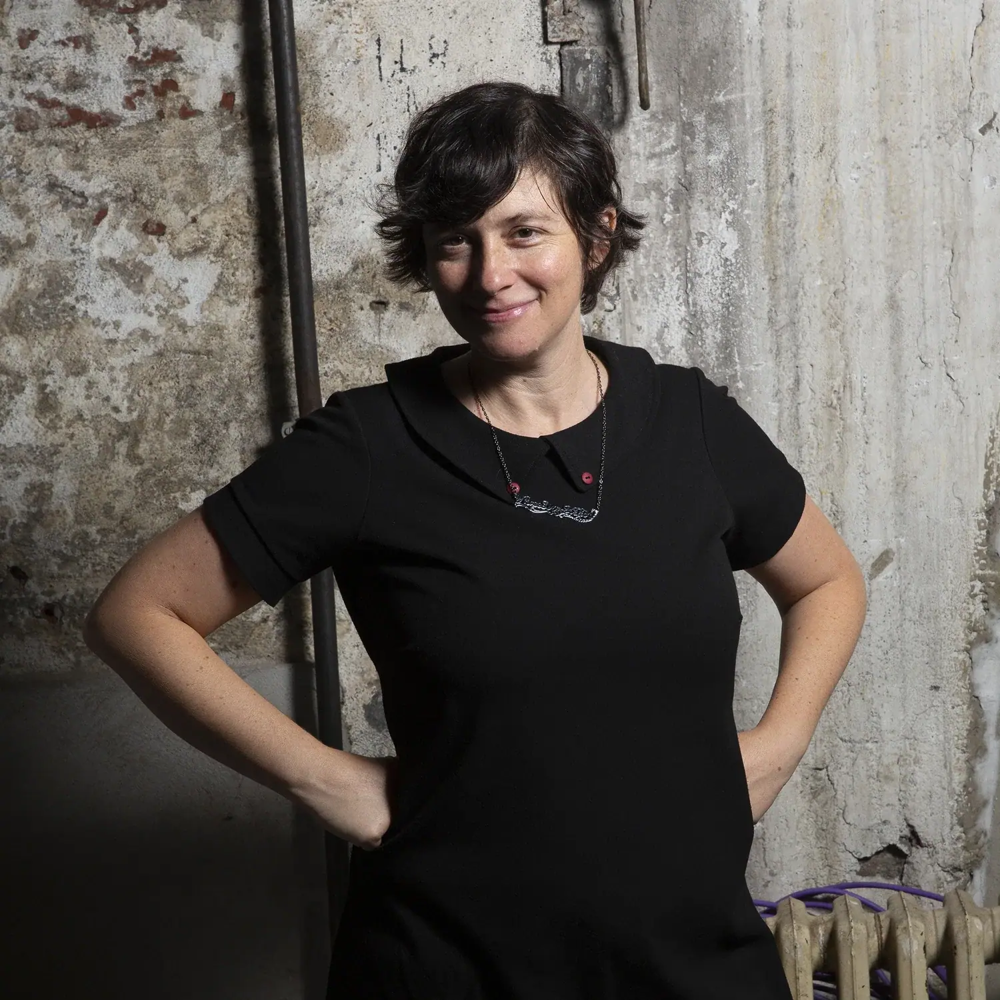
I photograph weddings, families and the in-between moments in an authentic and playful way. Twenty years in San Francisco and beyond, documentary at heart and infused with joy, so you remember the moments that matter and finally see the ones you didn’t notice.
behind the camera in San Francisco and around the world.

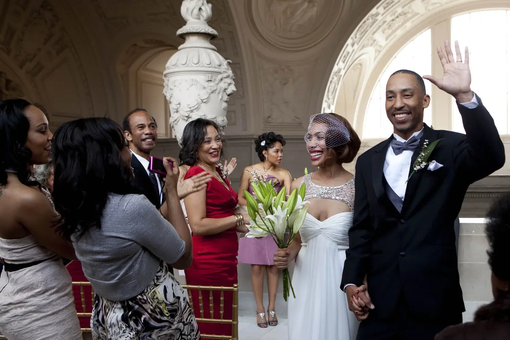
City Hall weddings documented. She knows every corner of the building.

From $1,200
City Hall collections, 1 to 3+ hours.
I usually reply within 24 hours, if not sooner.
Custom collections built around what matters to you, not a one-size package.

Concentrate on the essentials, without the stress of a larger production. I’ve photographed 100+ weddings here, know the ins and outs of the building, and can guide you through the process.
Plan your City Hall day
My purpose is to help you remember the moments that matter, reflected by love, and to show you parts of the day you may not have noticed.
See wedding stories
I bring a sense of play and silliness to create authentic smiles all around. Photo shoots organised like playdates, at the beach, the park, or at home.
Book a family playdateCity Hall is one of the most beautiful venues in San Francisco, and the road to marriage equality passed right through it. After 100+ ceremonies here, I’ll walk you through check-in and to the most picturesque spots, minus the guesswork.
Your first steps out as newlyweds, framed in gold leaf and wrought iron.
The marble sweep everyone dreams of. I know the quiet minutes between ceremonies.

Held in a circle by your closest people while you say your vows. Bonus points for white sneakers.

Arched windows, soft light and fewer crowds. My secret weapon for portraits.

Long light, polished floors and plenty of room to twirl.

Sky, gold dome and a kiss for the road before the champagne.
Collections from $1,200.
Images delivered in 2–3 weeks, in a private online gallery with printing built in.
Lederhosen in Tyrol, mist under an oak tree, a cable car to Baker Beach. Hover a story, then step inside.


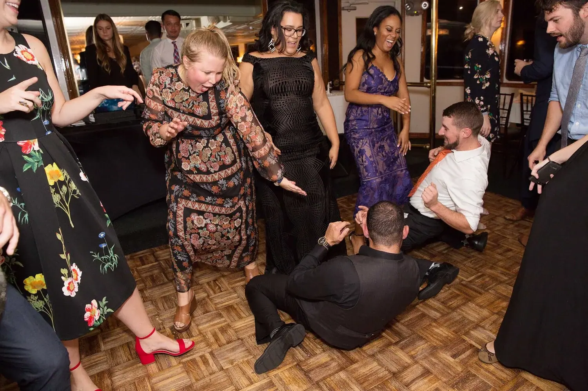

Above & beyond.
She knew all the picture-perfect spots inside SF City Hall. What makes her a really good photographer is her ability to read people. Each photo captured our personality, and the essence of who we are as a family.City Hall wedding · San Francisco, CA
Rock star!
She was everywhere we didn’t even know we wanted her to be, getting all the little details we’d spent so much time planning and the candids we missed at the time.Wedding · Oakland, CA
Fun, warm, and such a pleasure.
I’m a little camera shy and was worried my photos would suffer. One minute she was framing lovely photos of us, the next I’d forget she was even there. My day was made better by having her there.Wedding · Stinson Beach, CA
Exceeded all expectations.
During the ceremony she was so discreet, I never noticed her snapping photos. When we got them back, in a timely manner, they exceeded all expectations. We would recommend her a thousand times over.Wedding · San Francisco, CA
A shoot with me feels like hanging out with a good friend. Booking should feel the same: simple, warm and quick.
Tell me your date and what matters most. The enquiry takes about two minutes, and I usually reply within 24 hours, if not sooner.
We chat about your style, your people and the moments you can’t miss. For City Hall, I’ll walk you through booking and check-in so nothing is a surprise.
Sometimes I put on my invisibility cloak; other times I step in and gently guide. Either way, you’ll feel free to be yourselves.
Every image is individually edited and delivered in a private online gallery with printing built in. City Hall in 2–3 weeks; full weddings in 4–8.


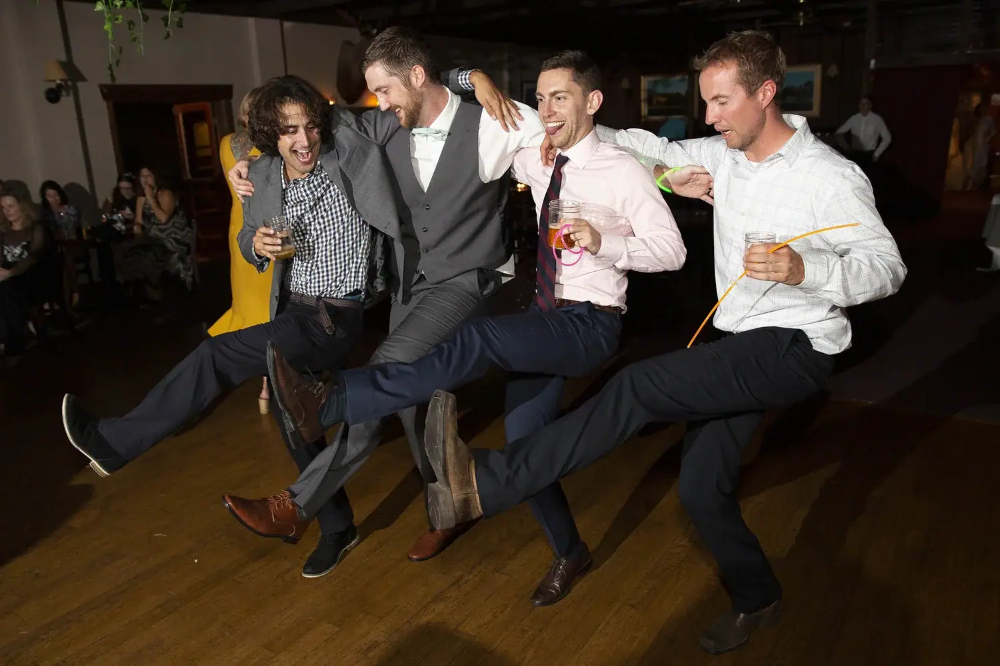


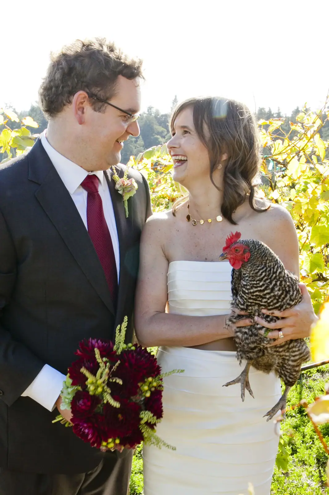
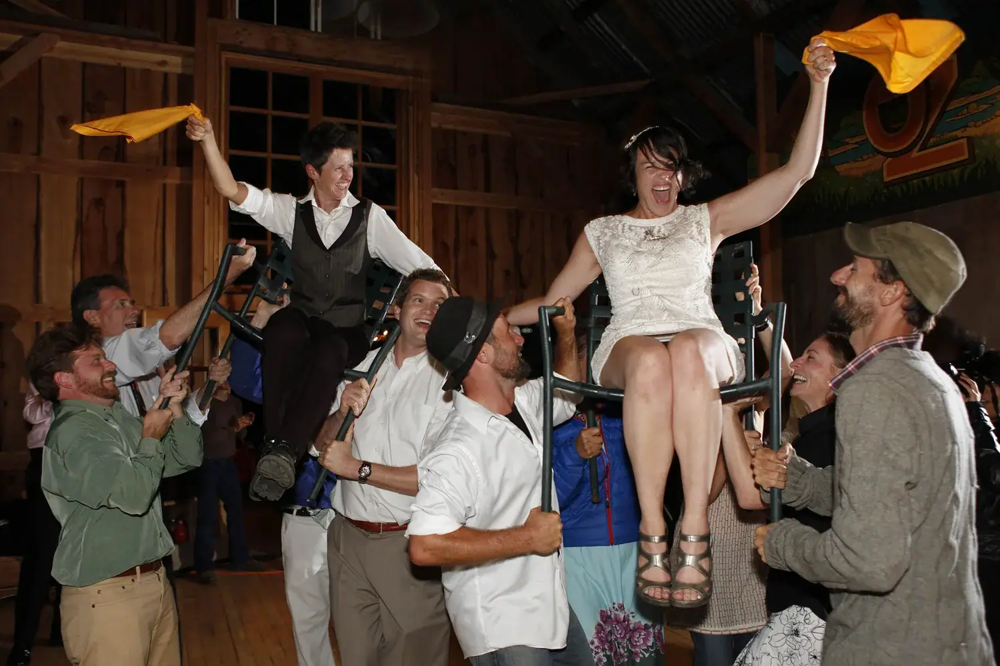
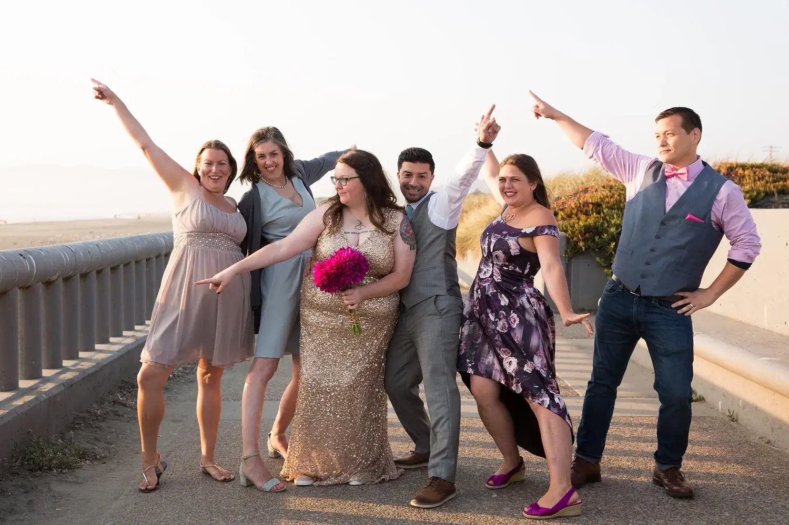

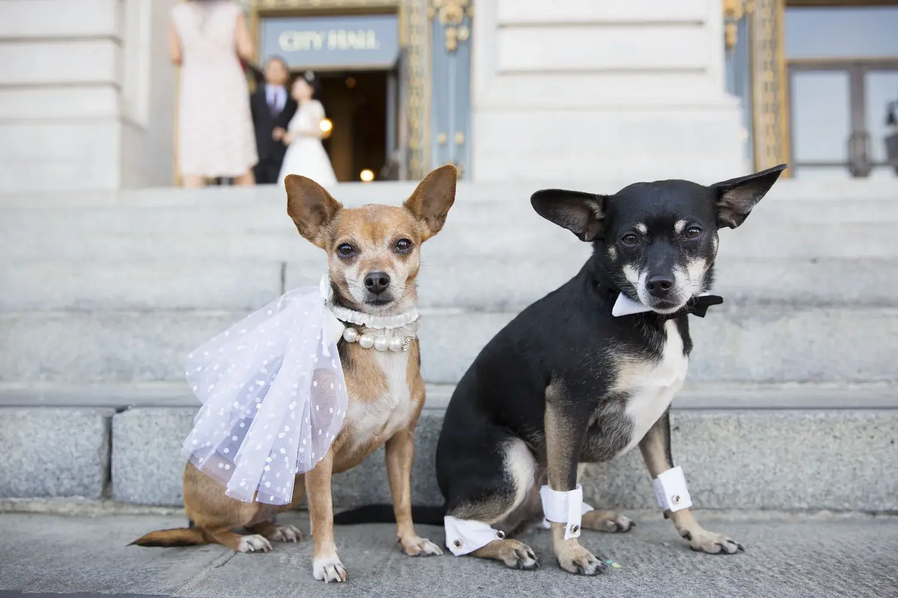
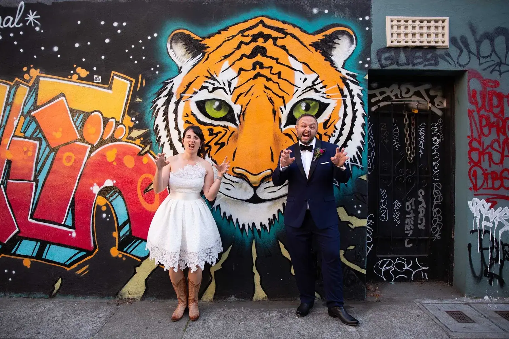

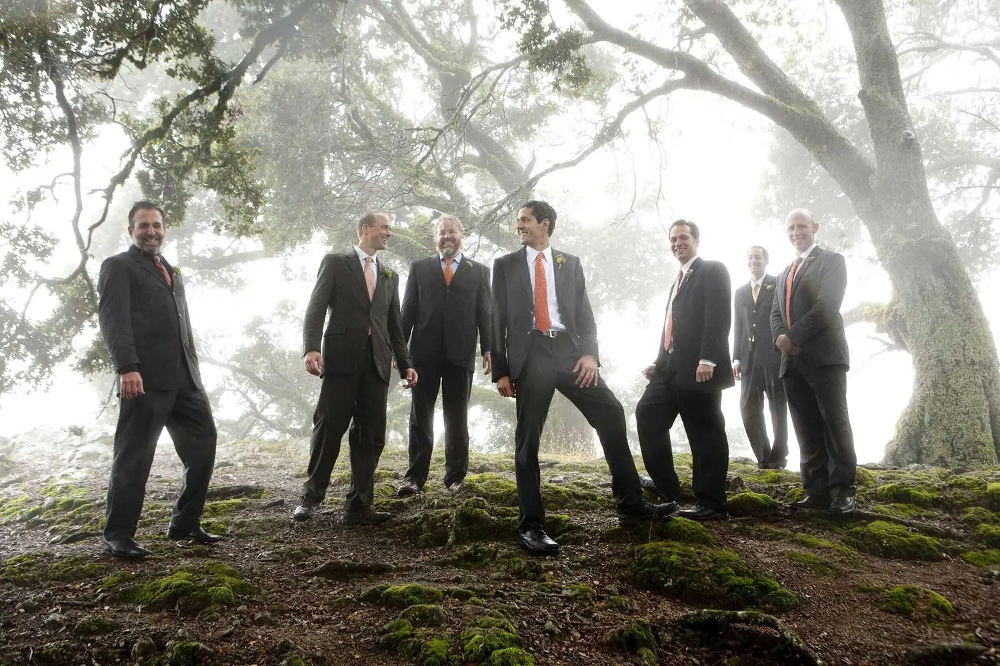
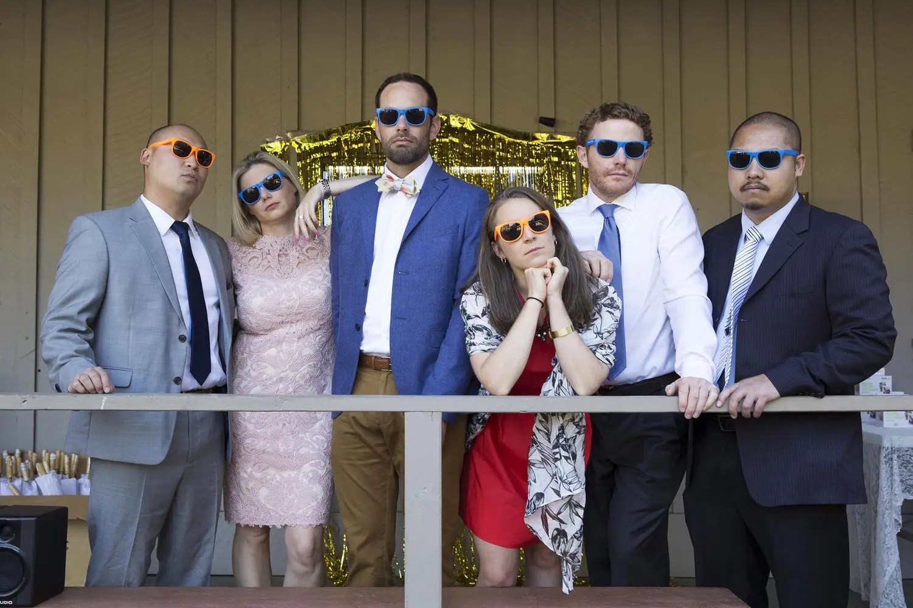
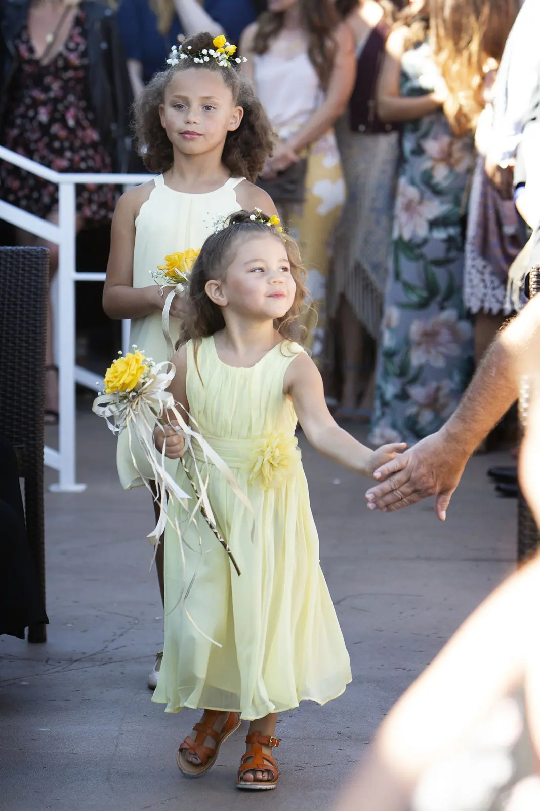
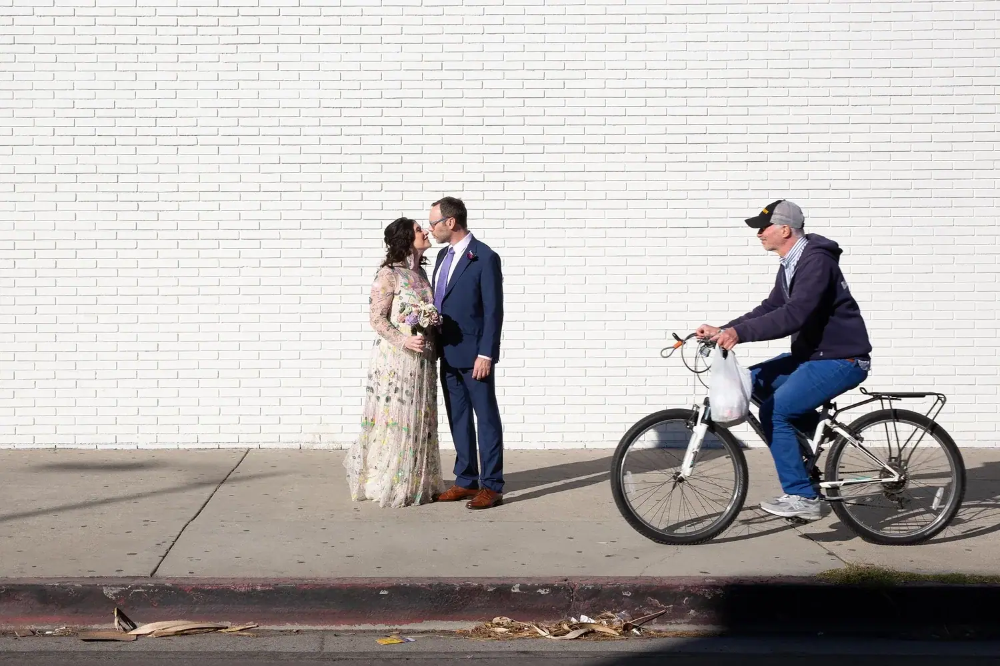

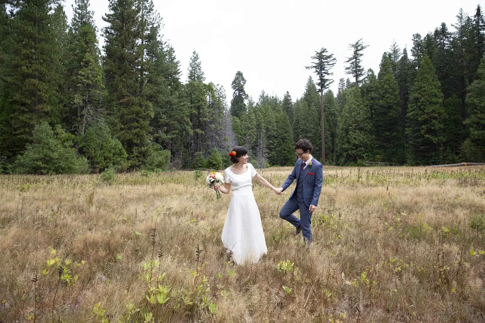
Pop in your date and occasion. You’ll land on a short enquiry with everything pre-filled, and hear back within 24 hours.
Pick a date to see how many days to go, and that evening’s sunset.